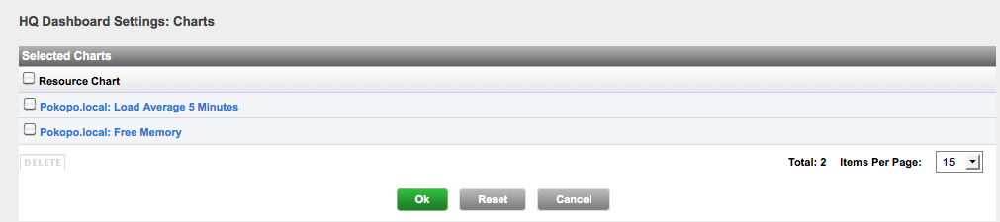

Hyperic 4.5 Documentation : ui-Dashboard.Charts
This page last changed on Mar 14, 2011 by mmcgarry.
Topics marked with * relate to features available only in vFabric Hyperic.
Feedback is welcome. Click Add Comment at the bottom of the page.
About the Saved Charts Portlet
The Saved Charts portlet allows you to view charts of interest from the dashboard. The portlet behaves differently depending on which edition of Hyperic you have.
- Hyperic HQ - In the open source version of Hyperic, the portlet contains links to charts that have been saved to the portlet.

- vFabric Hyperic - Charts are shown as a slideshow.

Add Chart to Saved Charts Portlet
When you are viewing a chart, click Save to Dashboard, show in the screenshot below.

Remove Chart from Charts Portlet
In vFabric Hyperic, click Remove Chart button on the chart.
To remove a chart from the portlet in the open source edition of Hyperic:
- Click the gear icon in the upper right corner of the portlet.
- The HQ Dashboard Settings: Charts page appears.
.
- Check the box next to each chart you wish to remove, and click Delete.
- Click OK.
{kind=link}
{kind=link}
{kind=link}
{kind=link}